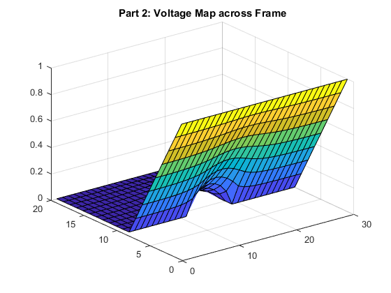

Contents
%%Assignment 2: Part 2 %Laplace equations will be solved in this part using finite difference.
Part 2: Question A
%The first section of this part will solve for the voltage across a frame where %one boundary is set to a fixed 1 volt and the opposing edge of the frame %is set to a fixed 0 volts. However we have heterogeneous material where %the conductivity changes. Two boxes will be in the frame with a %conductivity less than the conductivity outside of the box. clc %Set Frame Size L=30; nx = 2*L/3; ny = L; %Voltage at boundary vx=1; G = sparse(nx*ny); v = zeros(1,nx*ny); %Conductivity outside either box sig1 = 1; %Conductivity inside a box sig2 = 1e-2; %Establish dimensions of each box % [Left side, right side, top of box, bottom of box] box1 = [nx*2/5 nx*3/5 ny ny*3/5]; box2 = [nx*2/5 nx*3/5 ny*2/5 0];
1. Distribution of conductivity in material
sigma=ones(nx,ny); for i=1:nx for j=1:ny if(i > box1(1) && i < box1(2) && (j < box2(3)||j > box1(4))) sigma(i,j)=1e-2; end end end %Plot #1: Conductivity in Frame figure(1) surface(sigma) title('Part2: Sigma Plot')
2. Build G matrix and plot Voltage Map
for i=1:nx for j = 1:ny %Along fixed boundary (left side) n=j+(i-1)*ny; if(i==1) G(n,:)=0; G(n,n)=1; v(n)=vx; elseif(i==nx)%Along fixed boundary (right side) G(n,:)=0; G(n,n)=1; v(n)=0; elseif (j == 1) %Along unfixed boundary (bottom) if (i > box1(1) && i < box1(2)) %Inside Box G(n, n) = -3; G(n, n+1) = sig2; G(n, n+ny) = sig2; G(n, n-ny) = sig2; else %Outside box G(n, n) = -3; G(n, n+1) = sig1; G(n, n+ny) = sig1; G(n, n-ny) = sig1; end elseif (j == ny) %Along unfixed boundary (top) if (i > box1(1) && i < box1(2)) %Inside Box G(n, n) = -3; G(n, n-1) = sig2; G(n, n+ny) = sig2; G(n, n-ny) = sig2; else %Outside Box G(n, n) = -3; G(n, n-1) = sig1; G(n, n+ny) = sig1; G(n, n-ny) = sig1; end else %Not along any boundary, in the middle of the frame if (i > box1(1) && i < box1(2) && (j < box2(3)||j > box1(4))) %Inside a box G(n, n) = -4; G(n, n+1) = sig2; G(n, n-1) = sig2; G(n, n+ny) = sig2; G(n, n-ny) = sig2; else %Outside a box G(n, n) = -4; G(n, n+1) = sig1; G(n, n-1) = sig1; G(n, n+ny) = sig1; G(n, n-ny) = sig1; end end end end %G matrix made %Solve for solution temp=G\v'; %Backmap 'temp' vector into a physical (readable) matrix vmap=zeros(nx,ny); for i=1:nx for j=1:ny n=j+(i-1)*ny; vmap(i,j)=temp(n); end end %Plot the voltage map of frame figure(2) surf(vmap) title("Part 2: Voltage Map across Frame")
3.Electric Field
%Electric Field is the gradient of the voltage %Generate two matrices, each contains the gradient with respect to a %direction [Ex,Ey]=gradient(vmap); %Plot X-coordinate Electric Field figure(3) surface(Ex) title('X-Coordinate Electric Field') %Plot the Y-coordinate Electric Field figure(4) surface(Ey) title('Y-Coordinate Electric Field') %Combine the X- and Y- electric field with quiver, shows direction %(magnitude isnt as obvious however) figure(5) quiver(Ex,Ey) title('Electric Field') axis tight
4. Current Density
%Current is electric field multiplied by conductivity %Solve for current in x-direction Jx=Ex.*sigma; %Solve for current in y-direction Jy=Ey.*sigma; %'quiver-plot' of the currents figure(6) quiver(Jx,Jy) title('Quiver Current Density Through Frame') axis tight %Jx and Jy are orthogonal %Plot the total magnitude of the currents Jtotal=(Jx.^2+Jy.^2).^0.5; figure(7) surface(Jtotal) title('Surface Plot of Current Density Magnitude (No Direction Indicated)') axis tight
Summary
%As expected for the conductivity map, the conductivity is uniform through %the entire frame except at the two boxes. At the two boxes, the %conductivity drops to 1e-2 % %The voltage map is similar to what was seen in part 1 question 'a' as %there is a linear increasing voltage from one boundary to the next. %However the presence of the two boxes disrupts the uniformity. The voltage %increases in a parabolic shape between the two boxes . % %The electric (x- and y-) fields represents the gradient of the voltage %field. The quiver of the two plots show that the electric field lines %exit perpendicular to the surface of the boxes. The electric field lines %flow through the center of the two boxes. % %The current density follows the direction of the electric field. The current %density appears to be greatest towards the center in between the two %boxes. The simulation is symmetrical about the middle of the %bottleneck.